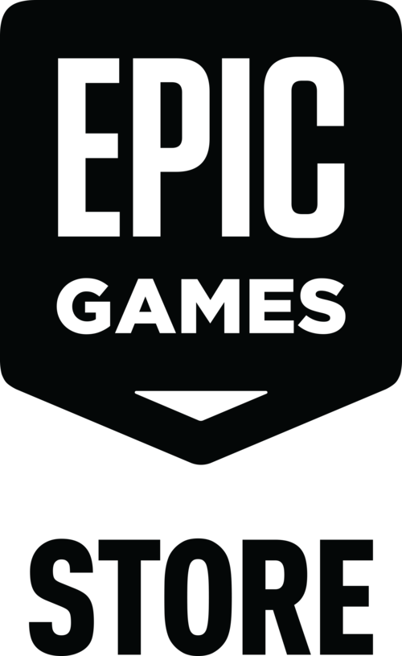

Obtén gratis Resident Evil Requiem y consigue el traje de Grace Ashcroft en Fortnite como regalo.
No te pierdas las últimas novedades en Fortnite, del clásico Battle Royale a Blitz.
No contestes al teléfono. ¡Ghost Face vuelve a Fortnite!